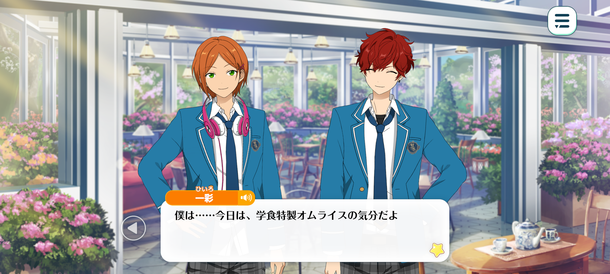
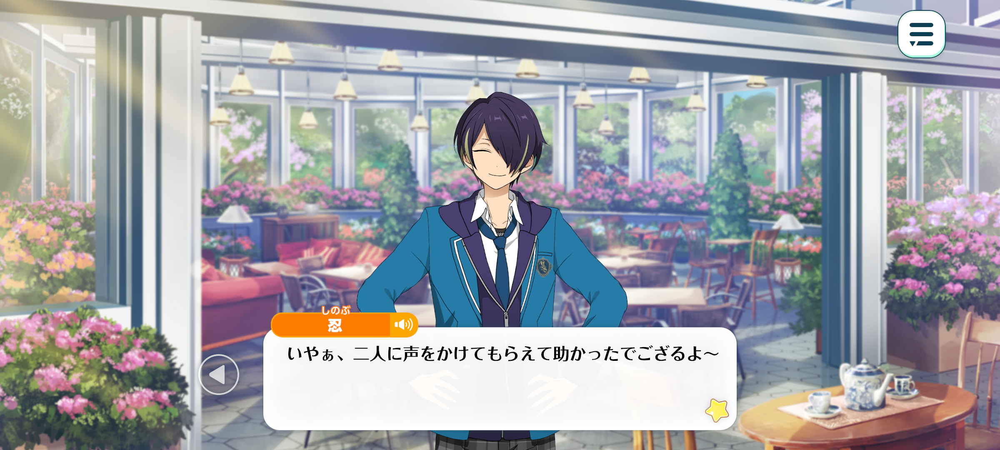
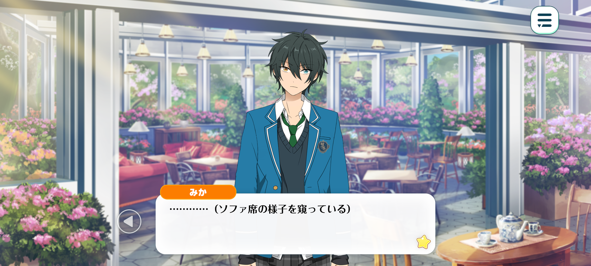

Easter To You
Prologue


Season: Winter

Hinata: It’s lunchtime, Hiiro-kun! What should we have today?
Hiiro: I'm... really in the mood for the cafeteria's special omurice today.
Hinata: Don't you mean today too? There are plenty of other delicious things on the menu, you know!
Hiiro: I know, but…
I've been enjoying trying all the different sauces: demi-glace, cream, tomato, and Japanese-style. That way, even if I have omurice every day, I never get tired of it.
Hinata: ...?
Hiiro: Hinata-kun? You suddenly went quiet. Did I say something strange?
Hinata: No, I think it's perfectly reasonable to enjoy all the different sauces... That's not what I meant, though!
Look! Anzu-san's sitting on that sofa over there.
Hiiro: Oh, you're right! It looks like she’s eating a sandwich while looking through some documents and taking notes.
Wouldn't doing all that at once be bad for her health? Surely she should focus on one thing at a time.
Hinata: Hmm, I guess you're right. I feel a little bad interrupting when she’s so focused, but I'm curious about what she’s working on. Shall we go over and ask?
And maybe we can join her whilst we're at it! ♪
He~y, Anzu-san~!
Ah, sorry, sorry! Didn't mean to startle you. I was just wondering if you were working even during your lunch break.
Hiiro: Hmm, you've written quite a lot. Are all these documents related to your work, Anzu-san?
Hinata: Huh? You don't mind if I take a look? Well, in that case, don't mind if I do—!
Oh, right! While we're at it, would you mind if we joined you? We'd been looking for somewhere to sit anyway! ♪
Hiiro: ...Fufu. Thank you. It looks like we'll be having quite a lively lunchtime with Anzu-san today.
Hinata: We'll go order our food before we sit down. Would you like anything else while we're at it? A refill, maybe?
...Nothing in particular? But someone's looking for a place to sit near the terrace entrance, so you'd like us to invite them over? What do you mean?
Hiiro: Oh, Shinobu-kun's looking around by the entrance. I wonder if he's looking for a seat, just like Anzu-san said?
Hinata: Fufu! With Shinobu-kun joining us too, lunchtime's going to get even livelier ♪. Just wait here! I'll go get him and bring him over!
Time: A little bit later

Shinobu: Ahh, you two really came to my rescue by calling me over! Thank you!
And thank you as well, Anzu-dono! ♪ I shall be sure to repay your kindness someday...!
Hinata: Anzu-san said she actually felt a little bad about taking up the whole sofa by herself, so she's glad we've joined her! ♪
Well, I mean, if you've been sitting there since before the cafeteria got crowded, it's not exactly easy to find somewhere else to sit afterwards...
Oops! I almost put my food down on top of your documents!
Hiiro: I noticed this earlier too, but that's quite a lot of paperwork. And from what I can see, there are pictures of... eggs?
Eggs with such bright... no, such unusual colours and patterns. I had no idea eggs like these existed!
Hinata: Ah, could those be Easter eggs? Does that mean Anzu-san's working on something for Easter?
Shinobu: Hmm, hmm! So last year's Easter Night is being revamped with some new additions, and will be returning as a brand-new event called Easter Fes...?
Hinata: Easter Night! Ahh, that takes me back. The timing wasn't great, so I couldn't take part in the live, though.
I did get to join Yuuta-kun for the Easter egg hunt~! It was so much fun splitting up and searching for eggs!
I wonder if Easter Fes will have something similar? Are you thinking of including activities like that this time too, Anzu-san?
Hiiro: Hmm, I see. There are so many words I'm unfamiliar with, it's a little difficult to follow.
So, since the Yumenosaki idols took part in the previous event, the ES idols have been invited to participate this time... Is that right, Anzu-san?
Umu! I'm glad I understood correctly! ♪
And if I've understood correctly, that means Anzu-san is the one in charge of planning this year!
Shinobu: However, an event running for more than half a month, from sometime in March all the way until Easter... That is quite a lengthy event, isn't it?
If that is the case, organising and preparing everything must be quite the undertaking...
Hmm?

Mika: ... (Watching everyone on the sofa from a distance)
Hinata: ...Looks like Kagehira-senpai wants to join us.
Kagehira-senpai~? Did you need something? Or are you looking for somewhere to sit too?
Mika: Nghaa, he noticed me...!
Sorry 'bout that. I heard you talkin' about Easter, so I couldn't help but listen in. Brought back some memories fer me too, y'know.
Hinata: Oh, that's right! If I remember correctly, Kagehira-senpai took part in the Easter Night live, didn't you?
Mika: Yup. That's why I've been wonderin' if there'll be another Easter-themed live this spring.
Hiiro: A live, huh...? Actually, you mentioned that ES idols had been invited to participate. Have you decided which unit will be performing yet?
Shinobu: —Oh! You’re putting together a shuffle unit?!
Mika: Ohh~, that's gotta be excitin'. I wonder what kinda people'll be takin' part.
Hinata: ...Anzu-san, Anzu-san! I've got an idea.
If you're having trouble deciding, why not choose everyone here?
Hiiro: All of us–
Shinobu: should form–
Mika: a shuffle unit?
Hinata: Well, we've all had the chance to hear about it straight from Anzu-san, and Easter Fes sounds pretty interesting too!
And since Producer-san's right here in front of me, I’ve gotta do a bit of self-promo ♪
So, what do you say?
Hiiro: Anzu-san's nodding... Does that mean—
Shinobu: We're going to be part of a shuffle unit...?!
Mika: Nghaa~? That was quick! Ya decided already...!
I'm real happy I get to take part in Easter again, but... Are ya sure it's alright for it to just be us?
Hinata: ...You think it needs a little more pizzazz? Hmm, looking at Anzu-san's notes, it does seem like you're aiming for something really flashy and spectacular.
It'd be reassuring to have someone who could make the event even more exciting. Someone like...
Maybe someone who'd have a Christmas tree flown in by helicopter just to surprise everyone at a Christmas party? Just throwin' ideas out there!
Shinobu: Hinata-kun. You already have someone in mind, don't you?
Hinata: Ahaha, guilty as charged!
Yep. There's someone I'd really like to join our shuffle unit.
After all, if Hibiki-senpai were part of it, I think it'd make for the best spring ever...♪